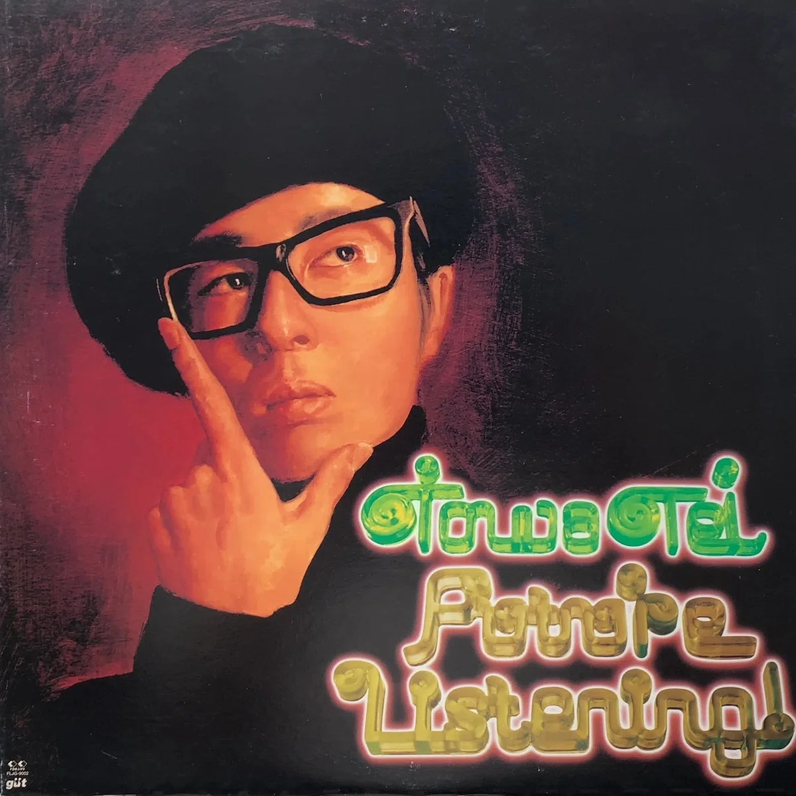
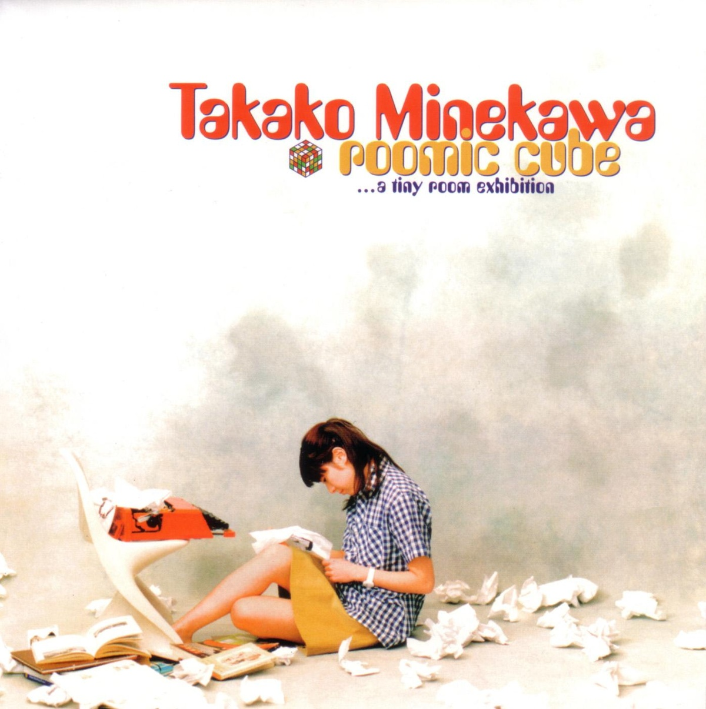
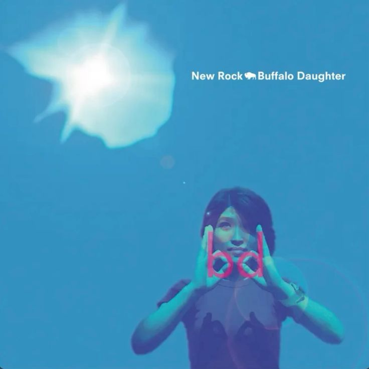
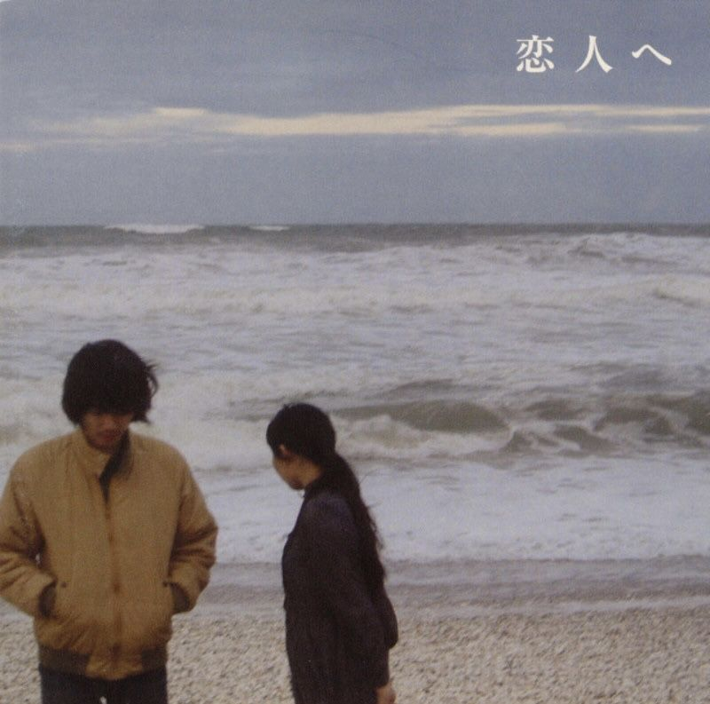

O Shibuya-kei (渋谷系, literalmente "estilo de Shibuya") foi um microgênero musical e movimento estético que nasceu em Tóquio no início dos anos 1990, centrado nas lojas de discos importados do bairro de Shibuya (como a HMV e a Tower Records).

Future Listening! é o álbum de estreia solo do produtor japonês Towa Tei, lançado em 21 de outubro de 1994 pelo selo japonês Güt / For Life Music (e nos Estados Unidos em 1995 pela Elektra Records). É um dos discos mais emblemáticos do Shibuya-kei, marcando a saída de Tei do grupo nova-iorquino Deee-Lite e seu retorno criativo à cena eletrônica e cosmopolita de Tóquio.

Uma joia do pop eletrônico experimental. Com vocais doces, sintetizadores analógicos e produções de Cornelius e Buffalo Daughter, o álbum destaca-se pelo conceito visual lúdico e geométrico inspirado em brinquedos retrô e revistas pop japonesas dos anos 60.

O lado mais experimental, psicodélico e alternativo de Shibuya. Misturando krautrock, hip-hop instrumental e sintetizadores analógicos, o grupo traz uma identidade visual sci-fi retrô cheia de personalidade e textura.
Um clássico cult da transição do Shibuya-kei para a era digital. Produzido por Tomoko Sasaki, o álbum combina bossa nova eletrônica, batidas leves e vocais doces com uma identidade visual Y2K inspirada em revistas pop japonesas e design de jogos da virada do século.

O elo moderno entre o Shibuya-kei, o city pop e a MPB/bossa nova. Com arranjos ricos em sopros, pianos elétricos e harmonias sofisticadas, o álbum se destaca por sua estética minimalista e nostálgica que traduz perfeitamente o romantismo urbano japonês.